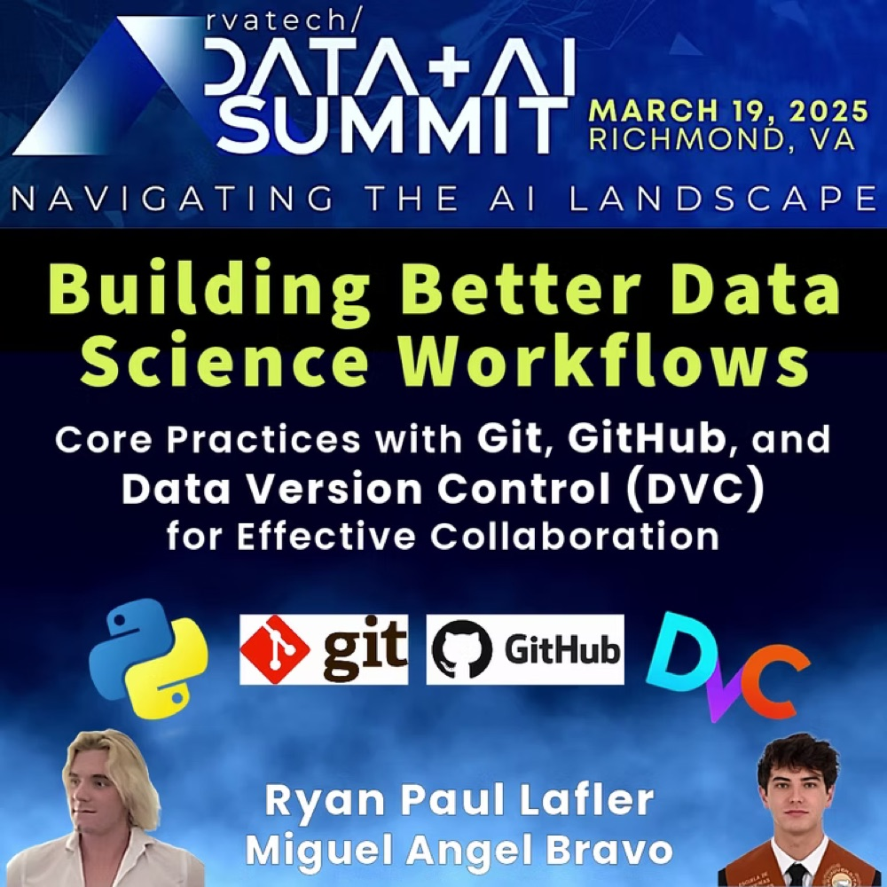
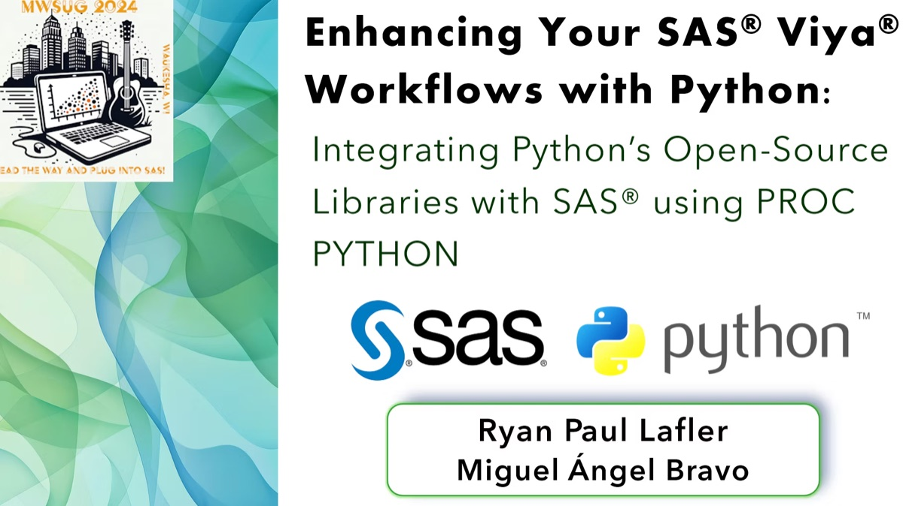
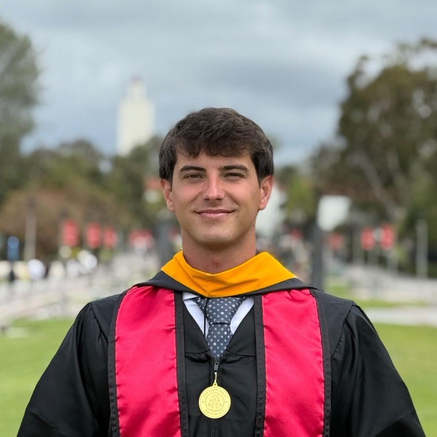

Two practical roadmaps for AI and data science workflows
Co-presented “Charting Your AI Journey” and “Building Better Data Science Workflows” and served as section chair for Masterpiece Theater and hands-on workshops.
Speaking & publications
I speak and write about machine learning, open-source workflows, AI systems and the engineering required to move from analysis to a useful product.
Selected appearances
The strongest entries include what I presented and why it mattered—not just a conference logo. Events are ordered by date.
Co-presented “Charting Your AI Journey” and “Building Better Data Science Workflows” and served as section chair for Masterpiece Theater and hands-on workshops.

A practical session on Git, GitHub and Data Version Control for reproducible, collaborative development, co-presented with Ryan Paul Lafler.

A technical paper and presentation showing how PROC PYTHON connects SAS Viya with Python’s open-source libraries for data preparation, modeling and visualization.
Presented a seven-model comparison over a large aviation and weather dataset, including the practical impact of class imbalance on model evaluation.
The RVAtech slide deck is intentionally not mirrored here because its copyright notice restricts redistribution. The event and talk remain documented through the official page.
Technical writing
Full reports stay available for readers who want methodology and limitations, while the project pages provide a faster path through the work.
First-author research associated with Agricultural and Forest Meteorology.
Ryan Paul Lafler and Miguel Ángel Bravo Martínez Del Valle.
Aviation and weather data integration, model comparison and interactive delivery.
Full-stack climate architecture, edge deployment and AI-assisted interpretation.

Invite or collaborate
I am interested in talks and collaborations around production AI, climate data, geospatial products, Python ecosystems and practical MLOps.